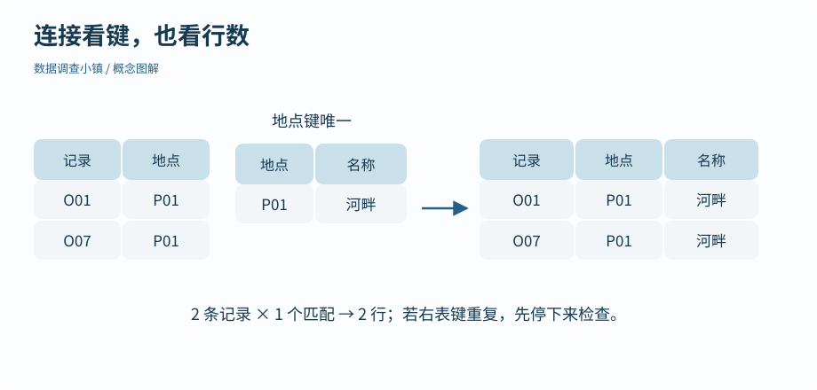

第 16 节 · 整理工坊
把地点资料接到记录旁边
连接两张表，为什么行数突然变多了？
理解连接键、左连接与未匹配记录，检查键的唯一性。
本节目录
运行位置：打开练习包内的 r-lab.Rproj，在项目根目录运行本节脚本。安装与准备见第 02—04 节；第 13 节说明扩展包。
编号是一把共同的钥匙
温度记录知道地点编号，地点资料知道地点名称和冠层覆盖率。连接键 site_id 把两者联系起来。它的意义来自记录设计，不是只要两个字段名字相同就能连接。
图解 · 连接看键，也看行数

两条 P01 记录连接唯一一条地点资料，仍得到两行。右侧键重复时可能复制左侧记录，必须检查关系。
放大查看 ↗ 保存 SVG ↓# 数据调查小镇 · 第 16 节
# 在 r-lab 项目根目录运行；输出只写入 results。
suppressPackageStartupMessages(library(dplyr))
records <- read.csv("data/observations.csv", stringsAsFactors = FALSE) |> distinct()
sites <- read.csv("data/sites.csv", stringsAsFactors = FALSE)
stopifnot(!anyDuplicated(sites$site_id))
joined <- left_join(records, sites, by = "site_id", relationship = "many-to-one")
print(c(before = nrow(records), after = nrow(joined)))
print(head(select(joined, record_id, site_id, site_name), 3))
print(nrow(anti_join(records, sites, by = "site_id")))
# 少一个地点时，左连接保留记录，但补入的资料缺失。
incomplete <- left_join(records, sites[1:2, ], by = "site_id", relationship = "many-to-one")
print(sum(is.na(incomplete$site_name)))before after
42 42
record_id site_id site_name
1 O001 P01 Riverside
2 O002 P02 Meadow
3 O003 P03 Grove
[1] 0
[1] 14左连接保留哪一边
left_join(records, sites, by = "site_id") 保留左边所有记录，为匹配成功的行补上地点资料。右表缺少某个编号时，这些左表记录仍存在，但补入字段变成 NA。
本例还使用 anti_join() 数出找不到地点资料的记录。一个稳妥的连接检查包含两件事：前后行数是否符合预期，未匹配编号有哪些。只看结果第一行出现了名称，并不能证明整张表都正确。
重复钥匙可能放大记录
如果右表 P01 出现两次，那么左表每一条 P01 记录都可能匹配两行，结果就会膨胀。relationship = "many-to-one" 表明我们的预期：多条观察记录可以对应一条地点资料，每条观察不能匹配多条地点资料。
stopifnot(!anyDuplicated(sites$site_id)) 在连接之前检查地点键是否唯一。这些检查不会决定哪条地点资料正确；它们让矛盾早点显现，避免下游均值看起来很合理却重复计数。
内连接为什么要谨慎
inner_join() 只保留双方都匹配的记录。它适合明确需要交集的问题，但右表缺资料时，也可能把左表的观察悄悄排除。选择连接方式前先回答：没有地点说明的记录，应该保留待查，还是确实不在问题范围内？
表格连接的思想与关系数据库有关：用稳定的键组织多张各负其责的表。学习这一步，就是从“把两张表凑在一起”转向明确说明它们的关系。
动手试试
预测左连接结果
左表有两条 P01 记录，右表只有一条 P01 地点资料。左连接后会有几行？若右表出现两条 P01 呢？
给我一点提示
每条左表记录会分别匹配符合条件的右表行。
查看参考解法与解释
唯一地点资料时得到两行；若右表有两条匹配，可能得到四行。many-to-one 检查会阻止后一种不符合本设计的连接。
带走这一点
连接靠键建立对应关系，键的唯一性和未匹配情况决定结果是否可信。把地点信息接好之后，下一节调整表格的长宽形状，让变量更容易被整理和绘图。
检查一下理解
左连接遇到没有地点资料的观察记录会怎样？
查看解释
左连接保留左侧记录；缺少匹配需要检查，不能把 NA 当作新信息。